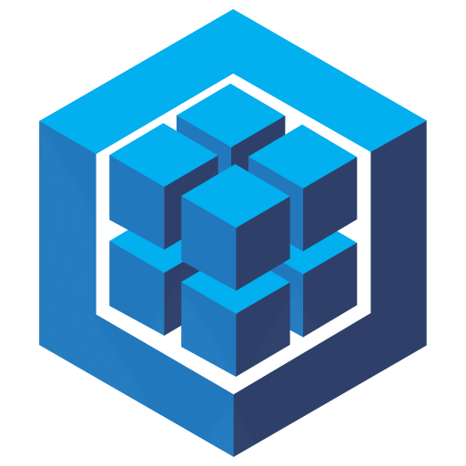
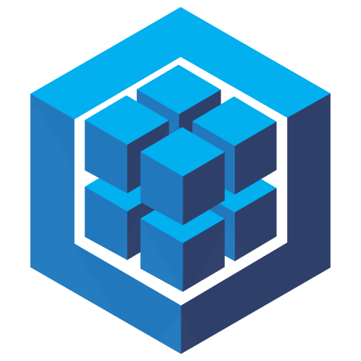

DevBoard
Dashboard personal para desarrolladores. Muestra estadísticas de GitHub, tareas en progreso y artículos técnicos.
React · Node.js · Tailwind
Soy un ingeniero de software argentino con más de 3 años de experiencia como desarrollador fullstack. Me apasiona diseñar soluciones eficientes con tecnologías modernas, escribir código limpio y mantener altos estándares de calidad. Disfruto colaborar en equipos técnicos exigentes, priorizando el pensamiento crítico, la claridad conceptual y la entrega con impacto.


 



Desarrollador Fullstack Semi-Senior
+3 años
Dashboard personal para desarrolladores. Muestra estadísticas de GitHub, tareas en progreso y artículos técnicos.
React · Node.js · Tailwind
Herramienta para testear y documentar APIs REST con una interfaz elegante y funcional.
Next.js · Prisma · PostgreSQL
Mapa interactivo de tecnologías con filtros por categoría y conexiones entre herramientas.
D3.js · TypeScript · Vite